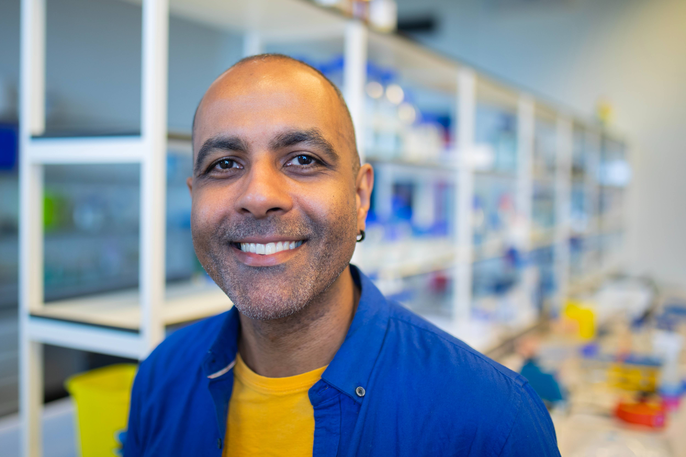

Research
Questions about DNA, chromatin and repair.
I am interested in how proteins interact with chromosomes, particularly when DNA is damaged. My research combines chromatin biology, microscopy and proteomics to study these responses in living cells.

From genome stability during meiosis to engineered chromatin readers, my research has followed a recurring question: how do proteins find the right place on a chromosome, and what happens when that process goes wrong?
How does chromatin influence DNA repair?
Inside a cell, DNA is wrapped around proteins and organised into chromatin. Some regions are more tightly packed than others, and this organisation can influence how cells detect and repair damage.
My work has explored how proteins are recruited to chromosomes during meiosis and how chromatin organisation shapes the response to DNA breaks. I am interested in the molecular signals and interactions that allow repair factors to act in the right place at the right time.
Scientific interests
- Chromatin organisation and DNA damage responses
- Protein recruitment to chromosomes and repair sites
- Genome stability in different cellular contexts
Related work: PLoS Genetics (2020)
How can we observe DNA damage in living cells?
Many methods for detecting DNA damage require cells to be fixed, giving us snapshots rather than a continuous view. I have developed genetically encoded chromatin readers that recognise a molecular mark associated with damaged DNA, allowing us to follow damage-associated chromatin as it changes over time.
The reader can also be coupled to proximity-labelling enzymes, making it possible to identify proteins near the marked chromatin using mass spectrometry. These approaches help connect what we see under the microscope with the molecular events taking place around DNA lesions.
Scientific focus
- Engineered chromatin readers and γH2AX-based sensors
- Live-cell imaging and quantitative measurements of DNA damage responses
- Proximity labelling and chromatin-associated proteomics
Related work: Nature Communications (2025) · Nucleic Acids Research (2026)
Which proteins are found near damaged DNA?
When DNA is damaged, many proteins gather around the affected region. Some detect the damage, some help organise the response and others contribute to repair. Identifying the proteins present nearby can reveal connections that are difficult to see one molecule at a time.
I use engineered chromatin readers coupled to proximity biotinylation and mass spectrometry to investigate the protein composition around DNA damage sites. This approach has allowed us to compare damage-associated protein networks under different treatments and across cell-cycle stages, and to identify factors with previously unrecognised roles in the DNA damage response.
Scientific focus
- Protein composition at γH2AX-marked damage sites
- Proximity biotinylation and quantitative mass spectrometry
- How damage conditions and the cell cycle influence associated protein networks
- Experimental validation of newly identified damage-response factors
Related work: Nucleic Acids Research (2026)